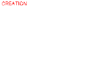
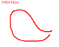
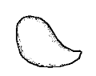
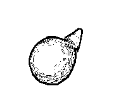
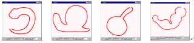

[1.Camera]
[2.Create]
[3.Paint]
[4.Extrude]
[5.Cut]
[6.Smooth]
[7.Bend]
[8.File]
Step 2: 新規生成
1
2
3
4
1) "Init" ボタンを押してください。 画面が白紙になります。
2) 左ボタンのドラッグで好きな形を書いてください。
(始点と終点の間は少し開けてください。自己交差するような線を
引くとおかしくなります。)
3) プログラムが自動的に３次元モデルを生成します。
4) マウスの右ボタンで回転できます。
5) (1) へ戻って何度か練習してください。

新規生成操作の例。
ポリゴンメッシュをみたい場合には "Style" ボタンを
押してください。もう一度押すともとに戻ります。
十分に練習できたら
step 3 へ。
プログラムの動作がおかしくなったら、アプレットウィンドウを閉じて
Teddy を再スタート
してください。
Copyright (C) 1998
Takeo Igarashi